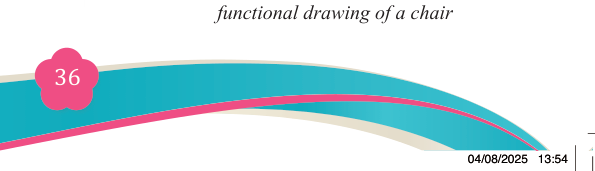
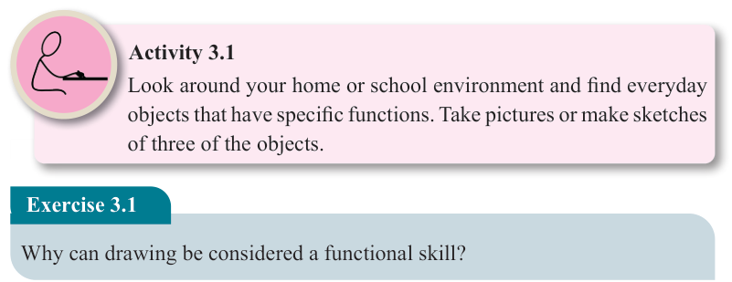
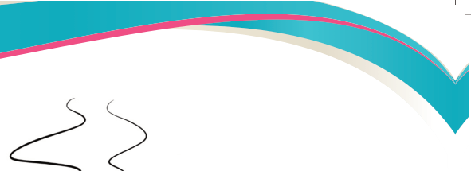
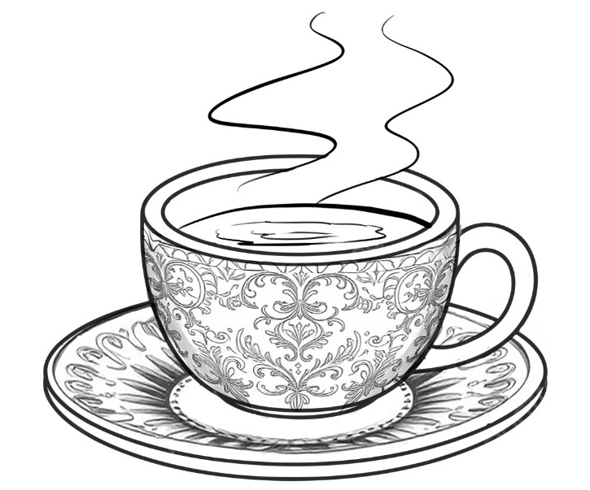
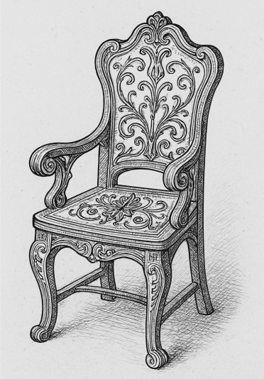

<!DOCTYPE html>
<html lang="en">

<head>
    <meta charset="utf-8" />
    <meta name="viewport" content="width=558, height=768" />
    <title>Fine Art for Secondary Schools</title>
    <meta name="title-id" content="pg042_sec001" />
    <meta name="page-section-id" content="42" />
    <link href="./content/tailwind_output.css" rel="stylesheet">
    <link href="./assets/libs/fontawesome/css/all.min.css" rel="stylesheet">
    <link href="./assets/fonts.css" rel="stylesheet">
    <link rel="preconnect" href="https://fonts.googleapis.com">
    <link rel="preconnect" href="https://fonts.gstatic.com" crossorigin>
    <link href="https://fonts.googleapis.com/css2?family=Caladea&amp;family=Tinos&amp;family=Arimo&amp;display=swap" rel="stylesheet">
    <style>
      html { width: 100%; height: 100%; background: #e5e7eb; }
      body { background: #e5e7eb; }
      #content {
        visibility: hidden;
        background: #fff;
        outline: 1px solid rgba(15, 23, 42, 0.28);
        box-shadow: 0 10px 30px rgba(15, 23, 42, 0.22);
      }
    </style>
    <noscript><style>#content { visibility: visible !important; }</style></noscript>
</head>

<body style="margin:0;overflow:hidden;width:100%;height:100%">
    <main>
      <div id="content" data-fl-reference-width="558" style="position:relative;width:558px;height:768px;margin:0 auto;overflow:hidden">
  
  
  
  
  
  
  
  
  
  
  <p data-id="pg042_p000" data-adt-reading-order="7" data-segments="[{&quot;text&quot;:&quot;Fine Art for Secondary Schools&quot;,&quot;style&quot;:{&quot;font-family&quot;:&quot;Caladea,serif&quot;,&quot;font-size&quot;:&quot;9px&quot;,&quot;color&quot;:&quot;#231f20&quot;}}]" data-adt-fit="1" style="position:absolute;z-index:2;top:49px;left:94px;line-height:9px;width:120px;height:9px;white-space:nowrap"><span style="font-family:Caladea,Merriweather,serif;font-size:9px;color:#231f20">Fine Art for Secondary Schools</span></p>
  
  <p data-id="pg042_p001" data-adt-reading-order="36" data-segments="[{&quot;text&quot;:&quot;36&quot;,&quot;style&quot;:{&quot;font-family&quot;:&quot;Caladea,serif&quot;,&quot;font-size&quot;:&quot;12px&quot;,&quot;color&quot;:&quot;#ffffff&quot;}}]" data-adt-fit="1" style="position:absolute;z-index:2;top:704px;left:268px;line-height:12px;width:13px;height:12px;white-space:nowrap"><span style="font-family:Caladea,Merriweather,serif;font-size:12px;color:#ffffff">36</span></p>
  
  <p data-id="pg042_p002" data-adt-reading-order="35" data-segments="[{&quot;text&quot;:&quot;Student&#x2019;s Book&quot;,&quot;style&quot;:{&quot;font-family&quot;:&quot;Tinos,serif&quot;,&quot;font-size&quot;:&quot;9px&quot;,&quot;color&quot;:&quot;#231f20&quot;}},{&quot;text&quot;:&quot; Form &quot;,&quot;style&quot;:{&quot;font-family&quot;:&quot;Tinos,serif&quot;,&quot;font-size&quot;:&quot;9px&quot;,&quot;color&quot;:&quot;#231f20&quot;,&quot;font-weight&quot;:&quot;bold&quot;}},{&quot;text&quot;:&quot;Two&quot;,&quot;style&quot;:{&quot;font-family&quot;:&quot;Tinos,serif&quot;,&quot;font-size&quot;:&quot;9px&quot;,&quot;color&quot;:&quot;#231f20&quot;,&quot;font-weight&quot;:&quot;bold&quot;,&quot;font-style&quot;:&quot;italic&quot;}}]" data-adt-fit="1" style="position:absolute;z-index:2;top:702px;left:94px;line-height:9px;width:97px;height:12px;white-space:nowrap"><span style="font-family:Tinos,&apos;Times New Roman&apos;,Times,Merriweather,serif;font-size:9px;color:#231f20">Student&#x2019;s Book</span><span style="font-family:Tinos,&apos;Times New Roman&apos;,Times,Merriweather,serif;font-size:9px;color:#231f20;font-weight:bold"> Form </span><span style="font-family:Tinos,&apos;Times New Roman&apos;,Times,Merriweather,serif;font-size:9px;color:#231f20;font-weight:bold;font-style:italic">Two</span></p>
  
  
  
  
  <p data-id="pg042_p003" data-adt-reading-order="10" data-segments="[{&quot;text&quot;:&quot;Figure 3.1:&quot;,&quot;style&quot;:{&quot;font-family&quot;:&quot;Tinos,serif&quot;,&quot;font-size&quot;:&quot;10px&quot;,&quot;color&quot;:&quot;#231f20&quot;,&quot;font-weight&quot;:&quot;bold&quot;}},{&quot;text&quot;:&quot; &quot;,&quot;style&quot;:{&quot;font-family&quot;:&quot;Tinos,serif&quot;,&quot;font-size&quot;:&quot;10px&quot;,&quot;color&quot;:&quot;#ef4d84&quot;,&quot;font-style&quot;:&quot;italic&quot;}},{&quot;text&quot;:&quot;An example of a functional drawing of a cup&quot;,&quot;style&quot;:{&quot;font-family&quot;:&quot;Tinos,serif&quot;,&quot;font-size&quot;:&quot;10px&quot;,&quot;color&quot;:&quot;#231f20&quot;,&quot;font-style&quot;:&quot;italic&quot;}}]" data-adt-fit="1" style="position:absolute;z-index:2;top:250px;left:165px;line-height:10px;width:227px;height:13px;white-space:nowrap"><span style="font-family:Tinos,&apos;Times New Roman&apos;,Times,Merriweather,serif;font-size:10px;color:#231f20;font-weight:bold">Figure 3.1:</span><span style="font-family:Tinos,&apos;Times New Roman&apos;,Times,Merriweather,serif;font-size:10px;color:#ef4d84;font-style:italic"> </span><span style="font-family:Tinos,&apos;Times New Roman&apos;,Times,Merriweather,serif;font-size:10px;color:#231f20;font-style:italic">An example of a functional drawing of a cup</span></p>
  <p data-id="pg042_p004" data-adt-reading-order="11" data-segments="[{&quot;text&quot;:&quot;Activity 3.1&quot;,&quot;style&quot;:{&quot;font-family&quot;:&quot;Tinos,serif&quot;,&quot;font-size&quot;:&quot;12px&quot;,&quot;color&quot;:&quot;#231f20&quot;,&quot;font-weight&quot;:&quot;bold&quot;}}]" data-adt-fit="1" style="position:absolute;z-index:2;top:287px;left:151px;line-height:12px;width:319px;height:18px;white-space:nowrap"><span style="font-family:Tinos,&apos;Times New Roman&apos;,Times,Merriweather,serif;font-size:12px;color:#231f20;font-weight:bold">Activity 3.1</span></p>
  <p data-id="pg042_p005" data-adt-reading-order="12" data-segments="[{&quot;text&quot;:&quot;Look around your home or school environment and find everyday\n&quot;,&quot;style&quot;:{&quot;font-family&quot;:&quot;Tinos,serif&quot;,&quot;font-size&quot;:&quot;12px&quot;,&quot;color&quot;:&quot;#231f20&quot;}},{&quot;text&quot;:&quot;objects that have specific functions. Take pictures or make sketches\n&quot;,&quot;style&quot;:{&quot;font-family&quot;:&quot;Tinos,serif&quot;,&quot;font-size&quot;:&quot;12px&quot;,&quot;color&quot;:&quot;#231f20&quot;}},{&quot;text&quot;:&quot;of three of the objects.&quot;,&quot;style&quot;:{&quot;font-family&quot;:&quot;Tinos,serif&quot;,&quot;font-size&quot;:&quot;12px&quot;,&quot;color&quot;:&quot;#231f20&quot;}}]" data-adt-fit="1" style="position:absolute;z-index:2;top:305px;left:150px;line-height:12px;width:320px;height:65px;white-space:pre"><span style="font-family:Tinos,&apos;Times New Roman&apos;,Times,Merriweather,serif;font-size:12px;color:#231f20">Look around your home or school environment and find everyday
</span><span style="font-family:Tinos,&apos;Times New Roman&apos;,Times,Merriweather,serif;font-size:12px;color:#231f20">objects that have specific functions. Take pictures or make sketches
</span><span style="font-family:Tinos,&apos;Times New Roman&apos;,Times,Merriweather,serif;font-size:12px;color:#231f20">of three of the objects.</span></p>
  <p data-id="pg042_p008" data-adt-reading-order="13" data-segments="[{&quot;text&quot;:&quot;Exercise 3.1&quot;,&quot;style&quot;:{&quot;font-family&quot;:&quot;Tinos,serif&quot;,&quot;font-size&quot;:&quot;12px&quot;,&quot;color&quot;:&quot;#ffffff&quot;,&quot;font-weight&quot;:&quot;bold&quot;}}]" data-adt-fit="1" style="position:absolute;z-index:2;top:370px;left:95px;line-height:12px;width:108px;height:26px;white-space:nowrap"><span style="font-family:Tinos,&apos;Times New Roman&apos;,Times,Merriweather,serif;font-size:12px;color:#ffffff;font-weight:bold">Exercise 3.1</span></p>
  <p data-id="pg042_p009" data-adt-reading-order="14" data-segments="[{&quot;text&quot;:&quot;Why can drawing be considered a functional skill?&quot;,&quot;style&quot;:{&quot;font-family&quot;:&quot;Tinos,serif&quot;,&quot;font-size&quot;:&quot;12px&quot;,&quot;color&quot;:&quot;#231f20&quot;}}]" data-adt-fit="1" style="position:absolute;z-index:2;top:396px;left:92px;line-height:12px;width:379px;height:17px;white-space:nowrap"><span style="font-family:Tinos,&apos;Times New Roman&apos;,Times,Merriweather,serif;font-size:12px;color:#231f20">Why can drawing be considered a functional skill?</span></p>
  
  <p data-id="pg042_p010" data-adt-reading-order="15" data-segments="[{&quot;text&quot;:&quot;Characteristics of simple functional&quot;,&quot;style&quot;:{&quot;font-family&quot;:&quot;Tinos,serif&quot;,&quot;font-size&quot;:&quot;12.178669929504395px&quot;,&quot;color&quot;:&quot;#007c91&quot;,&quot;font-weight&quot;:&quot;bold&quot;}}]" data-adt-fit="1" style="position:absolute;z-index:2;top:431px;left:86px;line-height:12.178669929504395px;width:200px;height:16px;white-space:nowrap"><span style="font-family:Tinos,&apos;Times New Roman&apos;,Times,Merriweather,serif;font-size:12.178669929504395px;color:#007c91;font-weight:bold">Characteristics of simple functional</span></p>
  <p data-id="pg042_p011" data-adt-reading-order="17" data-segments="[{&quot;text&quot;:&quot;drawing&quot;,&quot;style&quot;:{&quot;font-family&quot;:&quot;Tinos,serif&quot;,&quot;font-size&quot;:&quot;12px&quot;,&quot;color&quot;:&quot;#007c91&quot;,&quot;font-weight&quot;:&quot;bold&quot;}}]" data-adt-fit="1" style="position:absolute;z-index:2;top:447px;left:86px;line-height:12px;width:200px;height:18px;white-space:nowrap"><span style="font-family:Tinos,&apos;Times New Roman&apos;,Times,Merriweather,serif;font-size:12px;color:#007c91;font-weight:bold">drawing</span></p>
  <p data-id="pg042_p012" data-adt-reading-order="18" data-segments="[{&quot;text&quot;:&quot;(a) &quot;,&quot;style&quot;:{&quot;font-family&quot;:&quot;Tinos,serif&quot;,&quot;font-size&quot;:&quot;12px&quot;,&quot;color&quot;:&quot;#231f20&quot;}},{&quot;text&quot;:&quot;Simple functional drawing is designed&quot;,&quot;style&quot;:{&quot;font-family&quot;:&quot;Tinos,serif&quot;,&quot;font-size&quot;:&quot;12px&quot;,&quot;color&quot;:&quot;#231f20&quot;}}]" data-adt-fit="1" style="position:absolute;z-index:2;top:465px;left:86px;line-height:12px;width:200px;height:16px;white-space:nowrap"><span style="font-family:Tinos,&apos;Times New Roman&apos;,Times,Merriweather,serif;font-size:12px;color:#231f20">(a) </span><span style="font-family:Tinos,&apos;Times New Roman&apos;,Times,Merriweather,serif;font-size:12px;color:#231f20">Simple functional drawing is designed</span></p>
  <p data-id="pg042_p013" data-adt-reading-order="19" data-segments="[{&quot;text&quot;:&quot;to be used in a certain activity. It\n&quot;,&quot;style&quot;:{&quot;font-family&quot;:&quot;Tinos,serif&quot;,&quot;font-size&quot;:&quot;12px&quot;,&quot;color&quot;:&quot;#231f20&quot;}},{&quot;text&quot;:&quot;is created to serve a purpose. For&quot;,&quot;style&quot;:{&quot;font-family&quot;:&quot;Tinos,serif&quot;,&quot;font-size&quot;:&quot;12px&quot;,&quot;color&quot;:&quot;#231f20&quot;}}]" data-adt-fit="1" style="position:absolute;z-index:2;top:481px;left:106px;line-height:12px;width:180px;height:32px;white-space:pre"><span style="font-family:Tinos,&apos;Times New Roman&apos;,Times,Merriweather,serif;font-size:12px;color:#231f20">to be used in a certain activity. It
</span><span style="font-family:Tinos,&apos;Times New Roman&apos;,Times,Merriweather,serif;font-size:12px;color:#231f20">is created to serve a purpose. For</span></p>
  <p data-id="pg042_p015" data-adt-reading-order="20" data-segments="[{&quot;text&quot;:&quot;example, a chair is created to be sat&quot;,&quot;style&quot;:{&quot;font-family&quot;:&quot;Tinos,serif&quot;,&quot;font-size&quot;:&quot;12px&quot;,&quot;color&quot;:&quot;#231f20&quot;}}]" data-adt-fit="1" style="position:absolute;z-index:2;top:513px;left:106px;line-height:12px;width:180px;height:16px;white-space:nowrap"><span style="font-family:Tinos,&apos;Times New Roman&apos;,Times,Merriweather,serif;font-size:12px;color:#231f20">example, a chair is created to be sat</span></p>
  <p data-id="pg042_p016" data-adt-reading-order="21" data-segments="[{&quot;text&quot;:&quot;on and a lamp to light up a space.&quot;,&quot;style&quot;:{&quot;font-family&quot;:&quot;Tinos,serif&quot;,&quot;font-size&quot;:&quot;12.092889785766602px&quot;,&quot;color&quot;:&quot;#231f20&quot;}}]" data-adt-fit="1" style="position:absolute;z-index:2;top:529px;left:106px;line-height:12.092889785766602px;width:180px;height:16px;white-space:nowrap"><span style="font-family:Tinos,&apos;Times New Roman&apos;,Times,Merriweather,serif;font-size:12.092889785766602px;color:#231f20">on and a lamp to light up a space.</span></p>
  <p data-id="pg042_p017" data-adt-reading-order="22" data-segments="[{&quot;text&quot;:&quot;Unlike traditional drawing which&quot;,&quot;style&quot;:{&quot;font-family&quot;:&quot;Tinos,serif&quot;,&quot;font-size&quot;:&quot;12.178669929504395px&quot;,&quot;color&quot;:&quot;#231f20&quot;}}]" data-adt-fit="1" style="position:absolute;z-index:2;top:545px;left:106px;line-height:12.178669929504395px;width:180px;height:16px;white-space:nowrap"><span style="font-family:Tinos,&apos;Times New Roman&apos;,Times,Merriweather,serif;font-size:12.178669929504395px;color:#231f20">Unlike traditional drawing which</span></p>
  <p data-id="pg042_p018" data-adt-reading-order="23" data-segments="[{&quot;text&quot;:&quot;is often meant to be viewed from a&quot;,&quot;style&quot;:{&quot;font-family&quot;:&quot;Tinos,serif&quot;,&quot;font-size&quot;:&quot;12px&quot;,&quot;color&quot;:&quot;#231f20&quot;}}]" data-adt-fit="1" style="position:absolute;z-index:2;top:561px;left:106px;line-height:12px;width:180px;height:16px;white-space:nowrap"><span style="font-family:Tinos,&apos;Times New Roman&apos;,Times,Merriweather,serif;font-size:12px;color:#231f20">is often meant to be viewed from a</span></p>
  <p data-id="pg042_p019" data-adt-reading-order="24" data-segments="[{&quot;text&quot;:&quot;distance, functional drawing is meant&quot;,&quot;style&quot;:{&quot;font-family&quot;:&quot;Tinos,serif&quot;,&quot;font-size&quot;:&quot;11.9763765335083px&quot;,&quot;color&quot;:&quot;#231f20&quot;}}]" data-adt-fit="1" style="position:absolute;z-index:2;top:577px;left:106px;line-height:12px;width:180px;height:16px;white-space:nowrap"><span style="font-family:Tinos,&apos;Times New Roman&apos;,Times,Merriweather,serif;font-size:11.9763765335083px;color:#231f20">distance, functional drawing is meant</span></p>
  <p data-id="pg042_p020" data-adt-reading-order="25" data-segments="[{&quot;text&quot;:&quot;to be interacted with. Figures 3.2&quot;,&quot;style&quot;:{&quot;font-family&quot;:&quot;Tinos,serif&quot;,&quot;font-size&quot;:&quot;12.178669929504395px&quot;,&quot;color&quot;:&quot;#231f20&quot;}}]" data-adt-fit="1" style="position:absolute;z-index:2;top:593px;left:106px;line-height:12.178669929504395px;width:180px;height:16px;white-space:nowrap"><span style="font-family:Tinos,&apos;Times New Roman&apos;,Times,Merriweather,serif;font-size:12.178669929504395px;color:#231f20">to be interacted with. Figures 3.2</span></p>
  <p data-id="pg042_p021" data-adt-reading-order="26" data-segments="[{&quot;text&quot;:&quot;&amp; 3.3 illustrate functional drawing&quot;,&quot;style&quot;:{&quot;font-family&quot;:&quot;Tinos,serif&quot;,&quot;font-size&quot;:&quot;12.104693412780762px&quot;,&quot;color&quot;:&quot;#231f20&quot;}}]" data-adt-fit="1" style="position:absolute;z-index:2;top:609px;left:106px;line-height:12.104693412780762px;width:180px;height:16px;white-space:nowrap"><span style="font-family:Tinos,&apos;Times New Roman&apos;,Times,Merriweather,serif;font-size:12.104693412780762px;color:#231f20">&amp; 3.3 illustrate functional drawing</span></p>
  <p data-id="pg042_p022" data-adt-reading-order="27" data-segments="[{&quot;text&quot;:&quot;objects that have both the aesthetic&quot;,&quot;style&quot;:{&quot;font-family&quot;:&quot;Tinos,serif&quot;,&quot;font-size&quot;:&quot;12.041528701782227px&quot;,&quot;color&quot;:&quot;#231f20&quot;}}]" data-adt-fit="1" style="position:absolute;z-index:2;top:625px;left:106px;line-height:12.041528701782227px;width:180px;height:16px;white-space:nowrap"><span style="font-family:Tinos,&apos;Times New Roman&apos;,Times,Merriweather,serif;font-size:12.041528701782227px;color:#231f20">objects that have both the aesthetic</span></p>
  <p data-id="pg042_p023" data-adt-reading-order="29" data-segments="[{&quot;text&quot;:&quot;and functional element.&quot;,&quot;style&quot;:{&quot;font-family&quot;:&quot;Tinos,serif&quot;,&quot;font-size&quot;:&quot;12px&quot;,&quot;color&quot;:&quot;#231f20&quot;}}]" data-adt-fit="1" style="position:absolute;z-index:2;top:641px;left:106px;line-height:12px;width:113px;height:16px;white-space:nowrap"><span style="font-family:Tinos,&apos;Times New Roman&apos;,Times,Merriweather,serif;font-size:12px;color:#231f20">and functional element.</span></p>
  
  
  <p data-id="pg042_p024" data-adt-reading-order="31" data-segments="[{&quot;text&quot;:&quot;Figure 3.2&quot;,&quot;style&quot;:{&quot;font-family&quot;:&quot;Tinos,serif&quot;,&quot;font-size&quot;:&quot;10px&quot;,&quot;color&quot;:&quot;#231f20&quot;,&quot;font-weight&quot;:&quot;bold&quot;}},{&quot;text&quot;:&quot;: \u0007A sketch of a decorative\n&quot;,&quot;style&quot;:{&quot;font-family&quot;:&quot;Tinos,serif&quot;,&quot;font-size&quot;:&quot;10px&quot;,&quot;color&quot;:&quot;#231f20&quot;,&quot;font-style&quot;:&quot;italic&quot;}},{&quot;text&quot;:&quot;functional drawing of a chair&quot;,&quot;style&quot;:{&quot;font-family&quot;:&quot;Tinos,serif&quot;,&quot;font-size&quot;:&quot;10px&quot;,&quot;color&quot;:&quot;#231f20&quot;,&quot;font-style&quot;:&quot;italic&quot;}}]" data-adt-fit="1" style="position:absolute;z-index:2;top:655px;left:300px;line-height:10px;width:167px;height:29px;white-space:pre"><span style="font-family:Tinos,&apos;Times New Roman&apos;,Times,Merriweather,serif;font-size:10px;color:#231f20;font-weight:bold">Figure 3.2</span><span style="font-family:Tinos,&apos;Times New Roman&apos;,Times,Merriweather,serif;font-size:10px;color:#231f20;font-style:italic">: A sketch of a decorative
</span><span style="font-family:Tinos,&apos;Times New Roman&apos;,Times,Merriweather,serif;font-size:10px;color:#231f20;font-style:italic">functional drawing of a chair</span></p>
  <p data-id="pg042_p026" role="presentation" aria-hidden="true" data-segments="[{&quot;text&quot;:&quot;FINE ART F2 SB.indd 36&quot;,&quot;style&quot;:{&quot;font-family&quot;:&quot;Arimo,serif&quot;,&quot;font-size&quot;:&quot;6px&quot;,&quot;color&quot;:&quot;#ffffff&quot;}}]" data-adt-fit="1" style="position:absolute;z-index:2;top:746px;left:40px;line-height:6px;width:66px;height:6px;white-space:nowrap"><span style="font-family:Arimo,Arial,Helvetica,Merriweather,sans-serif;font-size:6px;color:#ffffff">FINE ART F2 SB.indd 36</span></p>
  <p data-id="pg042_p027" data-adt-reading-order="38" data-segments="[{&quot;text&quot;:&quot;04/08/2025 13:54&quot;,&quot;style&quot;:{&quot;font-family&quot;:&quot;Arimo,serif&quot;,&quot;font-size&quot;:&quot;6px&quot;,&quot;color&quot;:&quot;#ffffff&quot;}}]" data-adt-fit="1" style="position:absolute;z-index:2;top:746px;left:474px;line-height:6px;width:48px;height:6px;white-space:nowrap"><span style="font-family:Arimo,Arial,Helvetica,Merriweather,sans-serif;font-size:6px;color:#ffffff">04/08/2025 13:54</span></p>
<script src="./assets/auto-fit.js"></script>
</div>
    </main>
    <script>
      (function () {
        var c = document.getElementById("content");
        if (!c) return;
        var W = parseFloat(c.style.width) || c.offsetWidth || 1;
        var H = parseFloat(c.style.height) || c.offsetHeight || 1;
        var ref = parseFloat(c.getAttribute("data-fl-reference-width"));
        var refW = ref > 0 ? ref : W;
        var FALLBACK = 96;
        function dock() {
          var v = parseFloat(getComputedStyle(document.documentElement).getPropertyValue("--dock-height"));
          return v > 0 ? v : FALLBACK;
        }
        function fit() {
          var DOCK = dock();
          var byW = window.innerWidth / refW;
          var byH = (window.innerHeight - DOCK) / H;
          var s = Math.min(2, byW, byH > 0 ? byH : byW);
          c.style.position = "absolute";
          c.style.left = "50%";
          c.style.top = "calc((100% - " + DOCK + "px) / 2)";
          c.style.margin = "0";
          c.style.transformOrigin = "center center";
          c.style.transform = "translate(-50%, -50%) scale(" + s + ")";
          c.style.visibility = "visible";
        }
        fit();
        window.addEventListener("resize", fit);
        window.addEventListener("load", fit);
        window.addEventListener("adt:dock-resize", fit);
      })();
    </script>

    <div class="relative z-50" id="interface-container"></div>
    <div class="relative z-50" id="nav-container"></div>
    <script src="./assets/offline-preloader.js"></script>
    <script src="./assets/scorm.js"></script>
    <script src="./assets/base.bundle.local.js"></script>
</body>

</html>
